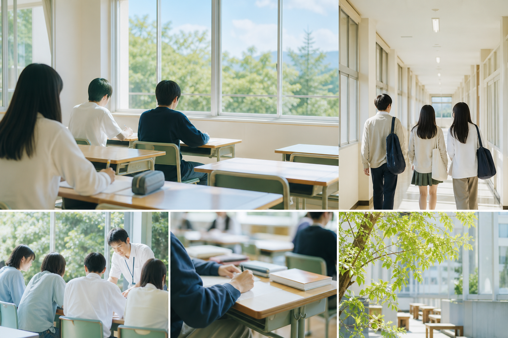

昼間二部制・単位制
自分の生活リズムや目標に合わせて、学ぶ時間帯や時間割を考えられる仕組みがあります。

清明高校とは
自分の生活リズムや目標に合わせて、学ぶ時間帯や時間割を考えられる仕組みがあります。
基礎を大切にしながら、興味や進路に合わせて学習を積み重ねていきます。
4年間での卒業を基本にしつつ、履修状況により3年間で卒業をめざす道もあります。
音楽の速度記号「アンダンテ」のように、急ぎすぎず、止まりすぎず。 清明高校は、生徒が自分のペースを大切にしながら学びを進められる環境を整えています。
5つのフレックス
登校する時間帯を考えながら、無理のない学校生活につなげます。
必要な科目や興味に合わせて、履修を組み立てていきます。
基礎の確認から発展的な学習まで、自分の状況に合わせて取り組みます。
行事や部活動、友人との時間を通して、少しずつ活動の幅を広げます。
4年を基本に、3年卒業も視野に入れながら学習計画を立てます。
学びのスタイル
清明高校では、教育のユニバーサルデザイン化を大切にし、 生徒が安心して学びに向かえる環境づくりに取り組んでいます。
できることを少しずつ増やしながら、自分に合う学び方を見つけていく。 その過程を、学校全体で支えます。
学校生活
文化的な活動や発表の機会を通して、学校生活に節目と楽しさをつくります。
興味のある活動に参加し、自分のペースで仲間との時間を育てます。
学習や進路、学校生活について相談しながら、次の一歩を考えます。
進路・サポート
進学や就職など、卒業後の進路は一人ひとり違います。 清明高校では、学習の積み重ねと日々の相談を通して、自分に合う進路を考えていきます。
入学を考えている方へ
入学者選抜、学校説明会、最新のお知らせは、京都府立清明高等学校の公式サイトで確認してください。 このページは紹介用の非公式制作ページとして、公式情報への入口になることを目的にしています。
4年での卒業を基本としながら、履修状況によって3年間で卒業をめざすことも可能とされています。
自分のペースを大切にしながら、学び方や高校生活を考えていきたい人に向いた環境です。
入試や説明会などの最新情報は、必ず京都府立清明高等学校の公式サイトで確認してください。
アクセス
所在地や交通案内は、公式サイトの最新情報を確認してください。 学校説明会などで訪れる際は、日時や持ち物もあわせて確認すると安心です。